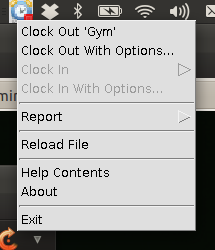

| [ < ] | [ > ] | [ << ] | [ Up ] | [ >> ] | [Top] | [Contents] | [Index] | [ ? ] |
To clock out of the current project, select Clock Out '[projectName]'
where projectName is the name of the currently clocked-in project.
The currently clocked-in project is always displayed as a clock-out option as the first option in the popup menu from the tray icon. In the following diagram, the Documentation project is currently clocked-in, and is therefore available to be clocked-out with the first menu item:
Note that two clock-out options are given; the first is for clocking-out without a description. This clocks-out the current project. The second option allows a description, date and time to be added, and an input screen will be shown allowing text to be entered against the clocked-out time period:

Several options are available, each with a checkbox. If the checkbox is not selected when the user selects OK, that field is not used as part of the clock-out. The options are as follows:
Losing focus of any date or time field (by selecting another UI field) will cause the newly entered date/time to be parsed, either in the format yyyy-mm-dd (for dates) and hh:mm (for times). Failure to enter a correct date or time will result in an error dialog being displayed, and the field will become disabled and the checkbox for the date or time will become unselected.
| [ < ] | [ > ] | [ << ] | [ Up ] | [ >> ] |
This document was generated by rich on April 1, 2013 using texi2html 1.82.